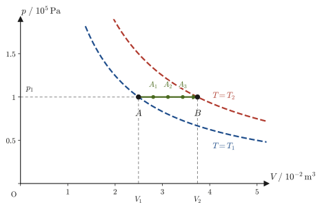
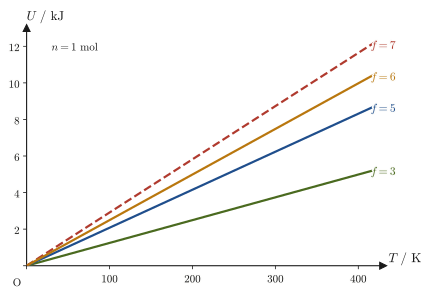
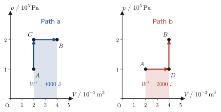

Chapter 26Thermodynamic Systems and State Quantities — Quasi-Static Processes and Work
Tea in a thermos bottle exchanges almost no heat with the outside world, even after many hours, as long as the lid is kept closed. If you put a lid on a pot and set it over a flame, heat keeps flowing in from outside, but thanks to the lid almost none of the water inside escapes. If you boil water in a kettle with the spout left open, not only heat but also “matter” itself, in the form of water vapor, escapes to the outside. Even for the same “container holding a gas or a liquid,” the ways it can interact with the outside world vary in just this manner. Thermodynamics begins by carefully classifying the object under consideration, focusing on “how it interacts with the outside world.” This is the first theme of this chapter.
In the preceding chapters we treated the equation of state and the internal energy on the premise that the state of a gas is determined by $(p,V,T)$. However, the state of a gas can be drawn on a $p$-$V$ diagram as a single point only when the gas is uniform throughout and is in “thermal equilibrium,” with the pressure and temperature settled to the same values everywhere. When a gas is compressed abruptly by a piston, the gas swirls and the pressure differs from place to place; such intermediate stages cannot even be represented as points on the $p$-$V$ diagram.
Thermodynamics therefore introduces an idealized change that “proceeds sufficiently slowly while always maintaining thermal equilibrium”—the quasi-static process—and uses it as a reference for reconsidering real changes. A quasi-static process is an idealization that cannot be realized exactly in practice, but because every instant along the way can be represented by a point on the $p$-$V$ diagram, it is easy to handle mathematically, and it provides the foundation for defining the “reversible engine” and “entropy” that we study in later chapters.
In this chapter we also learn the difference between state functions, such as the internal energy $U$, which are determined solely by “what state the system is in now,” and path functions, such as the heat $Q$ and the work $W$, whose values depend on “what path was followed.” This is a place where the mathematics learned in Chapter 6 (total differentials) and Chapter 34 (exact differential equations) of the companion volume “University Mathematics” (AD 02)—whether a small change in some quantity is an “exact differential” or an “inexact differential”—corresponds directly to the language of thermodynamics.
Next, from the kinetic theory of gases we derive $U=\tfrac32nRT$ for a monatomic ideal gas and generalize it according to the degrees of freedom of molecular motion. We then rewrite the first law of thermodynamics, learned in Chapter 23, using this book's sign convention (work $W$ done on the system / work $W'$ done by the system), and finally, starting from the mechanical definition of work, we derive the general expression for work $\dd'W=-F\,\dd x$ (under an external pressure, $\dd'W=-p_{\mathrm{ex}}\dd V$). This is the expression that serves as the starting point when we calculate the work of expansion and compression of a gas in the chapters that follow.
- The classification of systems according to whether heat, work, and matter are exchanged—isolated, closed, and open systems—together with the definitions of energy, work, and heat, and the difference between the internal energy of an ideal gas and that of a real gas (the presence or absence of intermolecular forces)
- Learning to distinguish state functions (quantities determined by the result alone) from path functions (quantities whose values depend on how the result was reached) through concrete examples
- The definitions of quasi-static processes (idealized processes that proceed sufficiently slowly while maintaining thermal equilibrium), reversible processes, and irreversible processes, and the reason why a quasi-static process is “idealized but convenient”
- Deriving the internal energy $U=\tfrac32nRT$ of a monatomic ideal gas from the results of the kinetic theory of gases (Chapter 24), and understanding how the expression for the internal energy changes with the degrees of freedom of molecular motion (translation, rotation, vibration)
- Rewriting the first law of thermodynamics correctly in this book's sign convention (work $W$ done on the system, work $W'=-W$ done by the system), and understanding mathematically the difference between the internal energy (exact differential $\dd U$) and heat and work (inexact differentials $\dd'Q$, $\dd'W$)
- Deriving the general expression for the work of a gas, $\dd'W=-p_{\mathrm{ex}}\dd V$, from the mechanical definition of work $\dd'W=-F\,\dd x$, and understanding that for a quasi-static process $W'=\int p\,\dd V$ (the area under the $p$-$V$ curve)
Source notes: Yasuhide Mochizuki, Physics Notes: Thermodynamics, pp. 25–31.
26.1 Classification of Systems — Isolated, Closed, and Open Systems
In physics, as in any other field, whenever we investigate something we must first decide clearly “what is to be the object of investigation.” For example, when we want to study the behavior of a gas confined in a cylinder with a piston, there is no need to take into account all at once the air outside the cylinder, the walls of the laboratory, and even the person conducting the experiment—it suffices to focus only on the gas itself and the range that directly affects it (the piston and the walls through which heat enters and leaves).
Definition 26.1: System and surroundings
A system is the part of the world in which we are particularly interested (not only a gas, but also a body itself may be called a system). The surroundings are the region outside the system, where we make our measurements. For example, if the gas in a cylinder is taken as the system, the walls of the cylinder, the piston, and the entire laboratory belong to the surroundings.
Depending on whether heat, work, and matter are exchanged between the system and the surroundings, systems can be classified into the following three types.
Definition 26.2: Isolated, closed, and open systems
| Type of system | Exchange of heat | Exchange of work | Exchange of matter |
|---|---|---|---|
| Isolated system | None | None | None |
| Closed system | Allowed | Allowed | None |
| Open system | Allowed | Allowed | Yes |
That is, in an isolated system none of heat, work, or matter passes in or out; in a closed system only matter does not pass in or out (heat and work may); and in an open system matter passes in and out as well.
Caution: Which type is the “adiabatic system,” which lets no heat through but does exchange work?
A system consisting of a gas confined in a cylinder and piston with adiabatic walls has no heat or matter entering or leaving, but if we push or pull the piston, work enters or leaves and the internal energy changes (the adiabatic process of Section 23.8). Because work enters and leaves, this system is not an isolated system in the strict sense; we treat it as a special case of a closed system (an adiabatic system).
Example 26.1: Classifying everyday systems
Classify each of (a)–(d) below as an isolated system, a closed system, or an open system. In every case, consider a sufficiently short time. (a) Tea in a thermos bottle with its lid shut tightly. (b) A gas in a sealed metal container whose outer wall conducts heat (only heat passes through it). (c) Water in a kettle that is being boiled over a flame with its lid left open. (d) A gas confined in a cylinder with adiabatic walls while the piston is slowly pushed in.
Solution. (a) A thermos bottle prevents the passage of heat as much as possible by means of insulation and a vacuum layer, and because the lid is closed, no matter (tea or water vapor) passes in or out either. Therefore it can be regarded as an isolated system (an idealization that comes close to one). In reality even a thermos bottle is not perfectly adiabatic and gradually cools over time, but for a short time it can be treated as an isolated system as a good approximation.
(b) The metal container conducts heat, so there is heat exchange with the surroundings, but because it is sealed, no matter passes in or out. Therefore it is a closed system.
(c) The water in the kettle receives heat from the burner flame (heat is exchanged), and, through boiling, water vapor escapes out of the spout (matter is exchanged). Therefore it is an open system.
(d) Because the walls are adiabatic, no heat passes in or out, and because the cylinder is sealed, no matter passes in or out either. However, work is done on the gas by the surroundings through the pushing of the piston. Because work passes in and out, it is not an isolated system but a special closed system that lets no heat through (an adiabatic system). The internal energy of this gas increases by the amount of work done on it.
26.2 Energy, Work, Heat, and Internal Energy
Now that we have defined a system, we next confirm the meanings of the three words “energy,” “work,” and “heat,” which describe what is exchanged within a system. You should have studied work and energy in high school physics as well, but thermodynamics redefines these words more rigorously, and from the viewpoint of the “system.”
Definition 26.3: Energy, internal energy, work, and heat
Energy is the capacity to do work. The internal energy $U$ is the sum of the energy of the thermal motion (translation, rotation, and vibration) of the molecules that make up the system and the energy of the interactions between molecules. Work is the transport of energy by motion against a force. Heat $Q$ is the transport of energy that results from a temperature difference between the system and the surroundings.
Caution: Internal energy includes neither the “motion of the container as a whole” nor the “potential energy due to height”
The internal energy $U$ includes only the random internal motion of the molecules and the energy of the interactions between molecules. It does not include the kinetic energy of the container when it is moving as a whole, or the potential energy it acquires when it is lifted to a high place. (Internal energy is a different kind of energy from the “mechanical energy” studied in high school.)
Caution: Heat and work are not quantities that a system “has” but “energy in transit”
Both work and heat are “energy moving between the system and the surroundings,” but they differ in origin. Work is energy carried by a mechanical displacement, in which a body moves against a force, whereas heat is energy carried solely because of a temperature difference.
Moreover, neither heat nor work is a quantity that a system “has”; each is a word for the amount of energy that crossed the boundary in the course of a process. We do not say “this gas has heat $Q$”; we say “in this process the gas received heat $Q$.” Therefore $Q$ and $W$ are not quantities determined by the initial and final states alone (Sections 26.3 and 26.6). When we studied only mechanics, we saw only the path of work; recall that the first law of thermodynamics (Section 23.4) was an energy conservation law that added the path of heat to it on an equal footing.
The content of the internal energy $U$ differs between an ideal gas and a real gas when we regard the gas molecules as individual particles.
Definition 26.4: Internal energy of an ideal gas
For an ideal gas, the forces acting between molecules (intermolecular forces) are neglected, so the internal energy $U$ is just the sum of the energies of the individual molecules. In particular, for an ideal gas of monatomic molecules, the energy of one molecule is only its translational kinetic energy. If there are $n\cdot N_{\mathrm A}$ gas molecules ($n$ is the amount of substance $[\mathrm{mol}]$ and $N_{\mathrm A}$ is the Avogadro constant), and the $k$th molecule has mass $m$ and velocity $\bm{v}_k$, then
$$ U=\sum_{k=1}^{n N_{\mathrm A}}\frac{1}{2}m\abs{\bm{v}_k}^2 $$holds. (For molecules with two or more atoms, rotational and vibrational energies are added to this; see Section 26.5.)
Definition 26.5: Internal energy of a real gas
For a real gas, intermolecular forces (attractive and repulsive) act between molecules, so the internal energy $U$ is the sum of the kinetic energy of each molecule and the potential energy (the energy of interaction) corresponding to the intermolecular forces. In the limit where the gas is dilute (the molecules are far enough apart) and the intermolecular forces can be neglected, the internal energy of a real gas approaches that of an ideal gas (Definition 26.4).
Intuition: Why does a real gas need “one more term”?
When gas molecules attract one another through intermolecular forces (for example, van der Waals forces), energy must be supplied from outside to pull the molecules apart—this has exactly the same structure as having to do work against gravity to lift an object from the ground (recall that the $a/V^2$ term in the van der Waals equation of state, which we studied in Section 24.4, represented this intermolecular force). Therefore the molecules of a real gas store extra energy, equal to the “potential energy” determined by their mutual positions, in addition to the kinetic energy of their flying about. The ideal gas is a model that neglects this intermolecular force in the first place, so no potential-energy term appears, and the internal energy is determined by the kinetic energy alone.
Whether the internal energy is “unchanged” or “changes” is tied to the classification of systems (Section 26.1). An isolated system exchanges none of heat, work, or matter and has no exchange of energy with the surroundings whatsoever, so its internal energy $U$ is unchanged. A closed system or an open system, on the other hand, exchanges heat and work with the surroundings (and, for an open system, the energy carried by matter as well), so its internal energy in general changes. Even in an adiabatic system, which lets no heat through, $U$ changes if work enters or leaves—the quantitative statement of this “way of changing” is the first law of thermodynamics (we restate it in Section 26.6 on the basis of this book's sign convention).
Example 26.2: Free expansion of an ideal gas and of a real gas
A rigid container with adiabatic walls is divided into two parts by a partition; one part contains a gas and the other is a vacuum. The partition is removed, and the gas expands into the vacuum part (this is called free expansion; there is no flow of heat in or out, and the gas does no work on the outside). Explain, together with the reason, how the temperature after the expansion compares with the initial temperature for each of (a) an ideal gas and (b) a real gas with attractive forces between its molecules.
Solution. Since the container has adiabatic walls, $Q=0$. Also, the container is rigid and the gas expands into a vacuum, so the gas does no work on the outside ($W'=0$). Therefore, by the first law of thermodynamics (Chapter 23), $\Delta U=Q-W'=0$. During the expansion the gas passes through a disturbed state, but the initial state and the final state are both thermal equilibrium states, and the internal energy is a state function, so $U_{\text{after}}=U_{\text{before}}$ holds.
(a) For an ideal gas, by Definition 26.4, $U$ is determined by the sum of the kinetic energies of the molecules alone, so $\Delta U=0$ means directly that the kinetic energy is unchanged, that is, that the temperature does not change (indeed, the temperature does not change in the free expansion of an ideal gas).
(b) For a real gas, by Definition 26.5, $U$ is the sum of the kinetic energy and the potential energy of the intermolecular forces. When the gas expands, the average distance between molecules increases and the molecules are pulled apart against the attraction, so the potential energy increases. Since $U$ as a whole is constant, the kinetic energy must decrease by the same amount. A decrease in kinetic energy means a decrease in temperature, so in the free expansion of a real gas with attractive forces, the temperature falls slightly.
The size of the drop can be estimated using the internal energy of a van der Waals gas, $U=nC_{V,\mathrm m}T-an^2/V$ (Section 27.4). Since $\Delta U=0$, when the state with volume $V_1$ and temperature $T_1$ changes to the state with volume $V_2$ and temperature $T_2$, we have
$$ nC_{V,\mathrm m}T_1-\frac{an^2}{V_1}=nC_{V,\mathrm m}T_2-\frac{an^2}{V_2}\quad\Longrightarrow\quad T_2-T_1=-\frac{an}{C_{V,\mathrm m}}\left(\frac{1}{V_1}-\frac{1}{V_2}\right) $$(if $V_2\gt V_1$, the right-hand side is negative; that is, the temperature falls). For example, when $1\ \mathrm{mol}$ of argon (monatomic molecules, $C_{V,\mathrm m}=\tfrac32R\approx12.5\ \mathrm{J/(mol\,K)}$, $a=0.1355\ \mathrm{Pa\,m^6/mol^2}$) freely expands from $V_1=10\ \mathrm L=1.0\times10^{-2}\ \mathrm{m^3}$ to $V_2=20\ \mathrm L$,
$$ T_2-T_1=-\frac{0.1355\times1}{12.47}\left(\frac{1}{1.0\times10^{-2}}-\frac{1}{2.0\times10^{-2}}\right)\ \mathrm K\approx-0.54\ \mathrm K $$and the temperature falls by about $0.5\ \mathrm K$. The units work out as $\mathrm{Pa\,m^6/mol}\times\mathrm{m^{-3}}\div\mathrm{J/(mol\,K)}=\mathrm{Pa\,m^3\,K/J}=\mathrm K$, which agrees with the unit of temperature.
Incidentally, a phenomenon very similar to this is the Joule–Thomson effect, in which a gas is made to flow continuously through a throttle (a porous plug) (Section 27.6). This is not a one-time change of the gas in a container but a steady flow, and the quantity held constant is also different, so it is a different process; but they have in common that the cause of the temperature change lies in the intermolecular forces.
26.3 State Functions and Path Functions
The quantities that characterize the state of a system (pressure $p$, volume $V$, temperature $T$, internal energy $U$, and so on) actually fall into two groups of different natures. One group consists of quantities whose values are determined solely by “what state the system is in now”; the other consists of quantities whose values change depending on “what path the system has followed to reach that state.” Distinguishing between the two is of decisive importance for understanding thermodynamics.
Definition 26.6: State function
A state function is a function that depends only on the present state of the system; it is a quantity that does not depend on how that state was produced (what path the system followed).
Definition 26.7: Path function
A path function is a function that depends on the history of what states the system passed through before reaching its present state; it is a quantity whose value is not determined by the initial and final states (the result) alone.
Intuition: A state function looks only at the “result,” a path function looks only at the “history”
A state function has its value determined as soon as the initial and final states are known—the path in between is irrelevant. A path function is the opposite: the path (the history) itself determines the value—even if the initial and final states are the same, the values may differ if the paths differ. Let us confirm this difference concretely with the following two familiar examples.
Illustration 26.1: An example of a path function—a round-trip train fare
Y went from Station A to Station B and, without leaving Station B, came straight back to Station A. But when Y left the station, he was told to pay the fare for the round trip, A→B and B→A.
If we look only at Y's final position (the result), he is back at Station A, where he started, as if he had “done nothing.” But the fare he actually pays is determined by how far he traveled along the route connecting Stations A and B (the history)—looking only at the result, we cannot tell the fare; we need to know the route itself. The fare is a typical example of a path function.
Illustration 26.2: An example of a state function—a test score
To prepare for tomorrow's test, Y had been pulling all-nighters for a week, studying during the hours when his father was asleep. But Y's test score was not very good, and he was scolded and asked why he had not done better.
How hard Y struggled to study (what history lay behind it) is not (unfortunately) reflected in the “result,” the test score. From the grader's point of view, the final state—the answer sheet—is everything, and how hard the process leading to it was is irrelevant. The score is a typical example of a state function—though it is an example with a moral attached: one must not spare the effort (the path) that goes into improving that state function.
Applying this to the state quantities of a gas, the internal energy $U$ is a representative state function—the internal energy of a given state is determined solely by that state's temperature, volume, and so on, and does not depend on “how the state was reached” (we will also confirm this mathematically in Section 26.6). On the other hand, heat $Q$ and work $W$ (and its “done by the system” version $W'$) are path functions. This is because heat and work are not quantities that the system “possesses,” but amounts of energy that crossed the boundary during a process. Even between the same initial and final states, the amounts of heat and work exchanged change if the path followed on the $p$-$V$ diagram is different. Moreover, this is not merely a matter of whether the change was made abruptly or slowly: even when both changes are made slowly and quasi-statically, different paths give different values (we check this with numbers in Example 26.7 of Section 26.6).
Example 26.3: Likening state functions and path functions to mountain climbing
Consider a climber going up from the foot of a mountain (altitude $0\ \mathrm{m}$) to its summit (altitude $1500\ \mathrm{m}$) either by a straight, steep ridge trail (distance walked $3000\ \mathrm{m}$) or by a gently winding detour (distance walked $6000\ \mathrm{m}$). State with reasons whether each of the climber's “altitude” and “distance walked” (which may be taken to be proportional to the number of steps) is a state function or a path function.
Solution. Altitude is a quantity determined solely by the climber's present position, “where he is now,” and does not depend on which path was taken—at the moment the climber reaches the summit, the altitude is the same $1500\ \mathrm{m}$ whether he came by the ridge trail or by the detour. Therefore altitude is a state function. On the other hand, the distance walked changes in value precisely according to which path was taken—$3000\ \mathrm{m}$ for the ridge trail and $6000\ \mathrm{m}$ for the detour, entirely different values for going from the same foot to the same summit. Therefore the distance walked is a path function. In the language of thermodynamics, the change in altitude $\Delta h=h_{\text{summit}}-h_{\text{foot}}=1500\ \mathrm{m}$ corresponds to the change $\Delta U$ in internal energy, and the distance walked corresponds to the heat $Q$ or the work $W$—to arrive at the same “final state,” the summit, the walking distance expended (= the value of a path function) changes with the path, whereas the altitude reached (= the value of a state function) is the same regardless of the path.
26.4 Quasi-Static, Reversible, and Irreversible Processes
The state of a gas can be drawn as a point on the $p$-$V$ diagram only when the gas is in thermal equilibrium.
Definition 26.8: Thermal equilibrium state
A thermal equilibrium state is a state that is macroscopically isotropic and uniform, in which the pressure and the temperature are constant everywhere in the gas.
Suppose that point $\mathrm A$ and point $\mathrm B$ represent thermal equilibrium states with pressure, volume, and temperature $(p_1,V_1,T_1)$ and $(p_1,V_2,T_2)$, respectively (Figure 26.2). Now consider a process from point $\mathrm A$ to point $\mathrm B$ in which the volume changes while the pressure is held at $p_1$ (an isobaric process). How ought the gas to change during this process?

Definition 26.9: Quasi-static process
A quasi-static process is an idealized process in which a thermodynamic system is changed infinitely slowly while it is always kept in thermal equilibrium (Definition 26.8).
Why is the quasi-static process, a process in which the change is made “slowly,” regarded as ideal, of all things? Points $\mathrm A$ and $\mathrm B$ in Figure 26.2 correspond to the states of the cylinder in Figure 26.3. A fixed weight rests on the piston, so the external pressure stays at $p_1$; when heat is added from below and the temperature is raised from $T_1$ to $T_2$, the gas expands and the piston is lifted. Let us consider the following two pictures of the process from point $\mathrm A$ to point $\mathrm B$.
Picture ①: The gas in state $\mathrm A$ is heated over a gas flame or the like, bringing it to state $\mathrm B$.
Caution: Picture ① is wrong!
If the gas in the cylinder is heated abruptly with a gas flame or the like, the volume and temperature of the gas certainly increase, but disturbances such as convection arise in the gas, so thermal equilibrium cannot be maintained. While thermal equilibrium is broken, the pressure and temperature differ from place to place in the gas, so it becomes impossible in the first place to represent “that state” as a single point on the $p$-$V$ diagram.
Picture ②: Since the process in between does not matter, we somehow bring the gas from the state at point $\mathrm A$ to the state at point $\mathrm B$.
Caution: Picture ② is wrong, too!
The states of the gas at all points on the line segment $\mathrm{AB}$—for example $\mathrm A_1,\mathrm A_2,\mathrm A_3$, the points along the way from point $\mathrm A$ to point $\mathrm B$—must all be thermal equilibrium states. This is because a state can be represented as a point on the $p$-$V$ diagram only when it is in thermal equilibrium. If we omit the intermediate course as unimportant, there is no longer any guarantee that the “in between” can be drawn on the diagram at all.
Thus, although the quasi-static process is an idealization that cannot actually be carried out in reality, the state at every instant along the way can be represented as a point on the $p$-$V$ diagram, so it can be handled theoretically with ease, for example by integration along a curve. It is precisely because we idealize that the treatment becomes simple.
Key point: The quasi-static process serves as the standard for treating reversible changes theoretically
In a quasi-static process, all the states along the way are thermal equilibrium states, so the process can be traced in the reverse direction, and then both the system and the surroundings return to their original states. The “reversible process” to be defined shortly is a process with this property. The quasi-static process will serve as the standard when we define reversible engines and entropy in later chapters.
Discussion: “Infinitely slowly”—slow compared with what?
Even if the pressure is disturbed in one part of a container, the disturbance propagates at the speed of sound (about $340\ \mathrm{m/s}$ in air) and is smoothed out. For a container of length $10\ \mathrm{cm}$, the time this takes is $0.1\ \mathrm m\div340\ \mathrm{m/s}\approx3\times10^{-4}\ \mathrm s$. If the gas is changed sufficiently more slowly than this time, the gas at each instant can be regarded as being in an almost uniform thermal equilibrium state. For example, moving the piston by $10\ \mathrm{cm}$ at a speed of $1\ \mathrm{cm/s}$ takes $10\ \mathrm s$, which is more than 30,000 times $3\times10^{-4}\ \mathrm s$, so the process may be regarded as almost quasi-static. (The time for temperature disturbances to be smoothed out is determined by how easily heat is conducted, and is often longer than the time for sound to propagate, so a process involving heating or cooling must be carried out even more slowly.) “Infinitely slowly” is the idealization in the limit in which the change is arbitrarily slower than the time it takes for disturbances inside the gas to die down in this way.
Discussion: Moving slowly while balancing the forces—how a quasi-static process is realized
Let us imagine placing grains of sand on the piston and removing them one grain at a time. Each time one grain is removed, the external pressure $p_{\mathrm{ex}}$ drops by a tiny amount, the gas expands by a tiny amount, and the external pressure and the pressure $p$ of the gas balance again. In this way, the volume changes while $p_{\mathrm{ex}}$ and $p$ remain almost equal at all times. This is a quasi-static expansion. (If the whole weight is removed at once, the gas expands violently with $p_{\mathrm{ex}}\ne p$, and the states along the way are no longer in thermal equilibrium.) In the case of heating, if we prepare many heat reservoirs whose temperatures differ by small steps and bring them into contact one after another, the temperature difference between the gas and the reservoir can always be kept extremely small.
Changing slowly while balancing the forces (pressures) in this way is what a quasi-static process is; even when we apply the mechanical work $W=\int F\,\dd x$ to a gas, we are in fact considering this quasi-static change. In a quasi-static process we may set $p_{\mathrm{ex}}=p$, and thanks to this the work can be expressed as the area under the curve on the $p$-$V$ diagram (Section 26.7).
Now that we see why quasi-static processes are convenient, we define reversible and irreversible processes.
Definition 26.10: Reversible process
A process after which both the system and the surroundings can be returned completely to their original states is called a reversible process. For example, the process that takes the gas from the state at point $\mathrm A$ to the state at point $\mathrm B$ by the quasi-static process of Definition 26.9 can be reversed: starting from the state at point $\mathrm B$, let the gas release heat in tiny steps, retrace the same path in the opposite direction, and return to the state at point $\mathrm A$. A process that can change the state in either direction in this way is a reversible process.
Caution: Even if slow, a process with friction is not reversible
Even a quasi-static process is not reversible if there is dissipation due to friction between the piston and the wall, viscosity of the gas, and the like. This is because frictional heat cannot be returned in the reverse direction, so that when the system is brought back, the surroundings do not return to their original state. A reversible process is a process that is quasi-static and, in addition, free of dissipation.
Definition 26.11: Irreversible process
When the gas is brought from the state at point $\mathrm A$ to the state at point $\mathrm B$, if the gas is heated abruptly, irregular eddies and tangles of gas arise in the course of the process. Even if we conversely try to return from the state at point $\mathrm B$ to the state at point $\mathrm A$ by cooling abruptly from this state, it is impossible for the irregular eddies and tangles of gas that arose in going from point $\mathrm A$ to point $\mathrm B$ to be formed again in exactly the same way. Thus a process of change of state caused by abrupt heating, abrupt cooling, and the like cannot be reversed. Such a process is called an irreversible process.
Application: Quasi-static and reversible processes are idealizations; all real processes are irreversible
Changes that occur in reality—a balloon deflating, coffee cooling, the kinetic energy of a car turning into heat at the brakes—are all irreversible processes, to a greater or lesser degree. Quasi-static and reversible processes are merely idealizations obtained by considering the limit of “infinitely slow” change, and cannot actually be realized exactly as such. Even so, by comparing real processes against this idealization, we can discuss quantitatively “how far they are from the ideal state.” This is the central idea when we study entropy and the efficiency of heat engines in later chapters.
Example 26.4: A quasi-static process and an abrupt process—deflating a balloon
Compare two cases: opening the mouth of an inflated balloon only a little and letting the air out slowly over time, and opening the mouth wide and letting the air out all at once. Take all the air that was originally in the balloon as the system (a closed system), counting the portion that has flowed out as part of the system as well. State with reasons whether, in each case, this air undergoes a process closer to a quasi-static process or closer to an irreversible, abrupt process.
Solution. When the mouth is opened only a little and the air is let out slowly, the system (all the air originally in the balloon) changes its volume by extremely small amounts at a time while always keeping nearly uniform pressure and temperature—this is close to the quasi-static process of Definition 26.9 (it nearly satisfies the condition of changing infinitely slowly while remaining in thermal equilibrium). On the other hand, when the mouth is opened wide and the air is let out all at once, the air in the balloon expands abruptly, and violent turbulence (eddies) arises in the airflow near the outlet. This is a typical example of an irreversible process, one in which “irregular eddies and tangles of gas” arise, as described in Definition 26.11—the turbulence of the air that has burst out cannot be put back into the balloon exactly as it was. Therefore, letting the air out slowly is close to a quasi-static process, and letting it out all at once is an irreversible, abrupt process.
26.5 Internal Energy as a State Quantity and the Degrees of Freedom of Molecular Motion
In Section 26.2, we defined the internal energy $U$ of an ideal gas as the sum of the kinetic energies of the individual molecules (Definition 26.4). In this section we rewrite this as a concrete expression that uses only the state quantities $n$ (amount of substance) and $T$ (absolute temperature). The fact that the internal energy is a state function (Section 26.3) is also a manifestation of this: it “can be written as a function of only the variables that describe the present state (here $n,T$).”
26.5.1 Internal energy of a monatomic ideal gas, $U=\tfrac32nRT$
As stated in Definition 26.4, the internal energy is the sum of the kinetic energies of the molecules and (in a real gas) the potential energy of the intermolecular forces. Here we consider an ideal gas of monatomic molecules, so only the translational kinetic energy needs to be taken into account. By the kinetic theory of gases and the law of equipartition of energy that we learned in Section 24.3, the mean kinetic energy of one monatomic molecule is
\begin{equation} \frac{1}{2}m\,\overline{\abs{\bm{v}}^2}=\frac{3}{2}\cdot\frac{R}{N_{\mathrm A}}\cdot T=\frac{3}{2}k_{\mathrm B}T \label{eq:26-avg-ke} \end{equation}Here $m$ is the mass of one molecule; $\overline{\abs{\bm{v}}^2}$ is the symbol obtained by drawing a bar over $\abs{\bm{v}}^2$ and denotes “the average of $\abs{\bm{v}}^2$ over all the molecules” (the same notation as in Chapter 24; it is to be distinguished from $\abs{\bm{v}_k}^2$ for an individual molecule in Definition 26.4); $R$ is the gas constant; and $N_{\mathrm A}$ is the Avogadro constant. Also, $k_{\mathrm B}=R/N_{\mathrm A}=1.380649\times10^{-23}\ \mathrm{J/K}$ is the Boltzmann constant, and per molecule this equation takes the form $\tfrac32k_{\mathrm B}T$. We obtained this relation in Chapter 24 by comparing $pV=\tfrac13Nm\overline{\abs{\bm{v}}^2}$, which came from the pressure that $N=nN_{\mathrm A}$ molecules exert on the wall, with the equation of state of an ideal gas, $pV=nRT$ (from $\tfrac13nN_{\mathrm A}m\overline{\abs{\bm{v}}^2}=nRT$ we get $\tfrac12m\overline{\abs{\bm{v}}^2}=\tfrac32\tfrac{R}{N_{\mathrm A}}T$).
Derivation: $U=\tfrac32nRT$
The thermodynamic system contains $n\ [\mathrm{mol}]$ of gas, that is, $n\cdot N_{\mathrm A}$ gas molecules. In an ideal gas the intermolecular forces are neglected, so the kinetic energy of each of these $n\cdot N_{\mathrm A}$ molecules, averaged over the molecules, equals the value given by Eq. \eqref{eq:26-avg-ke}. Therefore the internal energy $U$ of the whole system (by Definition 26.4, the sum of the kinetic energies of all the molecules) is, from the definition of the mean ($\overline{f}=\tfrac1N\sum_kf_k$ gives $\sum_kf_k=N\overline{f}$), the mean kinetic energy per molecule multiplied by the total number of molecules, $n\cdot N_{\mathrm A}$:
$$ U=\sum_{k=1}^{nN_{\mathrm A}}\frac{1}{2}m\abs{\bm{v}_k}^2=n\cdot N_{\mathrm A}\cdot\left(\frac{1}{2}m\,\overline{\abs{\bm{v}}^2}\right) $$Substituting Eq. \eqref{eq:26-avg-ke} into this gives
$$ U=n\cdot N_{\mathrm A}\cdot\frac{3}{2}\cdot\frac{R}{N_{\mathrm A}}\cdot T $$The $N_{\mathrm A}$ on the right-hand side disappears: the $N_{\mathrm A}$ that was multiplied in to count the total number of molecules and the $N_{\mathrm A}$ in the denominator of $R/N_{\mathrm A}$, which appeared in the energy per molecule, cancel exactly ($N_{\mathrm A}\times\dfrac{1}{N_{\mathrm A}}=1$)—the structure is such that when we take the product of the microscopic operation of “counting the number of molecules” and the microscopic quantity “energy per molecule,” the Avogadro constant (the constant that serves as a bridge between the microscopic and the macroscopic) cancels out exactly, and the result can be rewritten as an expression containing only the macroscopic amount of substance $n$ and the gas constant $R$:
\begin{equation} U=\frac{3}{2}nRT\ [\mathrm{J}] \label{eq:26-U-monatomic} \end{equation}∎
Formula 26.1: Internal energy of a monatomic ideal gas
The internal energy $U$ of a monatomic ideal gas with amount of substance $n\ [\mathrm{mol}]$ and absolute temperature $T\ [\mathrm{K}]$ is
$$ U=\frac{3}{2}nRT\ [\mathrm{J}] $$Note also that the internal energy can be written as a function of only $n$ and $T$ (it does not depend directly on the volume $V$)—this is a property specific to the ideal gas; in a real gas, which has intermolecular forces, $U$ in general depends on $V$ as well.
26.5.2 Degrees of freedom of molecular motion
The coefficient $\tfrac32$ in Eq. \eqref{eq:26-U-monatomic} is in fact directly linked to the degrees of freedom—the number that expresses “how freely a molecule can move.”
Definition 26.12: Degrees of freedom of molecular motion
When the energy of one molecule can be written as a sum of terms that are squares of velocities or coordinates (a quadratic form), the number of those terms is called the degrees of freedom $f$ of the motion of that molecule. According to the law of equipartition of energy (Section 24.3), each one of these terms has, on average, the energy $\tfrac12k_{\mathrm B}T$.
The quadratic terms appear for each kind of motion as follows.
- Translation (motion in which the position of the whole molecule changes): the three terms $\tfrac12mv_x^2$, $\tfrac12mv_y^2$, $\tfrac12mv_z^2$.
- Rotation: one term, $\tfrac12I\omega^2$ ($I$ is the moment of inertia and $\omega$ is the angular velocity), for each axis of rotation.
- Vibration: when atoms joined by a spring called a bond stretch and contract, two terms for each vibration (one mode): the kinetic energy $\tfrac12\mu\dot r^2$ ($\mu$ is the reduced mass and $r$ is the interatomic distance) and the elastic energy $\tfrac12k(r-r_0)^2$ ($k$ is the spring constant).
(In mechanics, “degrees of freedom” refers to the number of independent variables needed to specify position and orientation, and one vibration counts as one. In the equipartition law, however, what matters is the number of quadratic terms in the energy, so a vibration is counted as two: the two terms for the kinetic energy and the elastic energy.)
The degrees of freedom change with the structure of the molecule as follows (Figure 26.4).
- (i) Monatomic molecule: it can move freely in the three directions of the $x,y,z$ axes, so there are only the three translational terms, and the degrees of freedom are $f=3$.
- (ii) Diatomic molecule (near room temperature): in addition to the three translational terms, two terms for rotation about the two axes perpendicular to the molecular axis are added, so the degrees of freedom are $f=5$. If the atoms are regarded as point masses with no size, the moment of inertia for rotation about the molecular axis joining the two atoms is $0$, and this rotation carries no energy. For that reason rotation about the molecular axis is not counted (we check the reason in Exercise 26.4).
- (iii) Diatomic molecule (high temperature): at high temperatures, the vibration between the two atoms becomes effective. The two terms for the vibrational kinetic energy and elastic energy are added, and the degrees of freedom become $f=5+2=7$. Vibration starts to become effective at high temperatures of about a thousand $\mathrm K$ or more, and the temperatures that serve as a guide for vibration (the characteristic temperatures) are about $3400\ \mathrm K$ for $\mathrm{N_2}$ and about $2300\ \mathrm K$ for $\mathrm{O_2}$. Near room temperature, both $\mathrm{N_2}$ and $\mathrm{O_2}$ remain at $f=5$. Conversely, for a light molecule such as hydrogen $\mathrm{H_2}$, rotation also ceases to be effective at low temperatures of several tens of $\mathrm K$ or below, and the degrees of freedom approach $f=3$.
- (iv) Nonlinear polyatomic molecules ($\mathrm{H_2O}$, $\mathrm{NH_3}$, $\mathrm{CH_4}$, etc.): to the three translational terms are added three terms for rotation about three mutually perpendicular axes, so the degrees of freedom are $f=6$. On the other hand, for a linear molecule whose atoms line up in a straight line, such as $\mathrm{CO_2}$ or $\mathrm{C_2H_2}$, rotation about the molecular axis is not counted, so there are only two axes of rotation, and as in (ii) we have $f=5$ from three translational plus two rotational terms (excluding vibration).
As we saw in the derivation, for a monatomic molecule with $f=3$ degrees of freedom we had $U=\tfrac32nRT$. Generalizing this, in each molecule with $f$ degrees of freedom, an energy of $\tfrac12k_{\mathrm B}T$ is distributed equally to each of the degrees of freedom (the law of equipartition of energy). Therefore, for an ideal gas consisting of $n\ \mathrm{mol}$ of molecules with $f$ degrees of freedom, by exactly the same procedure as the derivation of Eq. \eqref{eq:26-U-monatomic} (we only replace $\tfrac32$ by $\tfrac f2$), the internal energy can in general be written as $U=\tfrac f2nRT$. Writing this out concretely for four cases gives the following (we regard the number of degrees of freedom $f$ as constant, independent of temperature).
Formula 26.2: Internal energy of molecules (by cases according to the degrees of freedom)
| Type of molecule | Degrees of freedom $f$ | Internal energy $U$ |
|---|---|---|
| (i) Monatomic molecule | $3$ | $U=3\times\dfrac12nRT=\dfrac32nRT$ |
| (ii) Diatomic molecule (near room temperature) | $5$ | $U=\dfrac52nRT$ |
| (iii) Diatomic molecule (high temperature) | $7$ | $U=\dfrac72nRT$ |
| (iv) Nonlinear polyatomic molecule (such as $\mathrm{H_2O}$) | $6$ | $U=6\times\dfrac12nRT=3nRT$ |
A linear molecule (such as $\mathrm{CO_2}$) has $f=5$ ($U=\tfrac52nRT$), the same as in (ii).
Caution: Check the units
When substituting numerical values into the equations of Formula 26.2, make the units consistent: $n\ [\mathrm{mol}]$, $R=8.31\cdots\ [\mathrm{J/(mol\cdot K)}]$, and $T\ [\mathrm{K}]$. Check that $[\mathrm{mol}]\times[\mathrm{J/(mol\cdot K)}]\times[\mathrm{K}]=[\mathrm{J}]$, which agrees with the unit of internal energy (the joule).

Example 26.5: Molar heat capacity at constant volume of a diatomic molecule
For an ideal gas of diatomic molecules at ordinary temperature, such as nitrogen $\mathrm{N_2}$ or oxygen $\mathrm{O_2}$ (with $f=5$ degrees of freedom), find the rate of change of the internal energy per $1\ \mathrm{mol}$ of substance with respect to temperature (the molar heat capacity at constant volume $C_{V,\mathrm m}$, a quantity whose definition is studied in detail in Section 27.2; here it is enough to understand it simply as $C_{V,\mathrm m}=\dd U_{\mathrm m}/\dd T$ ($U_{\mathrm m}=U/n$)).
Solution. By Formula 26.2, the internal energy of a diatomic molecule (at ordinary temperature) is $U=\dfrac52nRT$. The molar internal energy per $1\ \mathrm{mol}$ is $U_{\mathrm m}=U/n=\dfrac52RT$, so differentiating this with respect to $T$ gives
$$ C_{V,\mathrm m}=\diff{U_{\mathrm m}}{T}=\frac{5}{2}R=\frac{5}{2}\times8.314\ \mathrm{J/(mol\cdot K)}\approx20.79\ \mathrm{J/(mol\cdot K)} $$This agrees well with the experimentally known value of the molar heat capacity at constant volume of $\mathrm{N_2}$ and $\mathrm{O_2}$ at ordinary temperature (about $20.8\ \mathrm{J/(mol\cdot K)}$).
Example 26.6: Heat needed to warm a gas of bent polyatomic molecules at constant volume
We want to raise the temperature of an ideal gas of $n=1\ \mathrm{mol}$ of bent polyatomic molecules such as water vapor $\mathrm{H_2O}$ (a rigid-body model that ignores vibration, with $f=6$ degrees of freedom) by $100\ \mathrm K$ while keeping the volume constant. Find the required quantity of heat $Q$ (since the process is isochoric, no work is done and you may use $Q=\Delta U$; we will learn this relation again in Section 27.2).
Solution. By Formula 26.2, the internal energy of a nonlinear polyatomic molecule is $U=3nRT$. Since the volume is constant, the change in internal energy is the change that results when only $T$ is changed by $\Delta T=100\ \mathrm K$ with $n$ held fixed:
$$ \Delta U=3nR\,\Delta T=3\times1\ \mathrm{mol}\times8.314\ \mathrm{J/(mol\cdot K)}\times100\ \mathrm K\approx2494\ \mathrm J\approx2.49\ \mathrm{kJ} $$No work is done in an isochoric process (as we will learn in Section 27.2, $\dd V=0$ gives $\dd'W=0$), so by the first law of thermodynamics $Q=\Delta U\approx2.49\ \mathrm{kJ}$. In real water vapor, the vibration of the molecules contributes a little, so the measured value is somewhat larger than the value from this rigid-body model. Also, for a linear molecule such as $\mathrm{CO_2}$ we have $f=5$ and $U=\tfrac52nRT$, so the heat required under the same conditions is $\tfrac52nR\Delta T\approx2.08\ \mathrm{kJ}$, and the answer depends on the shape of the molecule.
26.6 Rewriting the First Law of Thermodynamics, and Exact and Inexact Differentials
As we confirmed in Section 26.2, the gas gaining a quantity of heat and work being done on the gas (or by the gas) are two paths of equal standing, either of which can change the internal energy. Putting this into the form of an equation gave us the first law of thermodynamics (Chapter 23, Law 23.2). Let us now write down the first law once more, for the setting in which the gas gains a quantity of heat and, at the same time, itself does work on its surroundings.
Law 26.1: First law of thermodynamics (the form using $W'$)
When a gas receives a quantity of heat $Q\ [\mathrm J]$ from its surroundings and does work $W'\ [\mathrm J]$ on its surroundings, the change $\Delta U\ [\mathrm J]$ in its internal energy is
\begin{equation} \Delta U=Q-W' \label{eq:26-first-law} \end{equation}(this is the law of conservation of energy in thermodynamics). For small changes, using a small quantity of heat $\dd'Q$ and a small amount of work $\dd'W'$ done by the gas on its surroundings (the small amount of work done on the gas is $\dd'W=-\dd'W'$), we can write
\begin{equation} \dd U=\dd'Q-\dd'W'=\dd'Q+\dd'W \label{eq:26-first-law-diff} \end{equation}(the meaning of $\dd'$ is explained in Section 26.6.1).
Caution: $\Delta U=Q-W'$ and $\Delta U=Q+W$ are the same law—converting between $W$ and $W'$
Eq. \eqref{eq:26-first-law}, $\Delta U=Q-W'$, of this chapter ($W'$ = the work done by the gas on its surroundings) is the same law as the first law $\Delta U=Q+W$ introduced in Chapter 23, Conventions Used Throughout This Part ($W$ = the work done on the gas by its surroundings; Law 23.2). Since the work done by the gas and the work done on the gas have opposite signs, $W'=-W$, we can verify this at once by substituting:
$$ \Delta U=Q-W'=Q-(-W)=Q+W $$In other words, the form $\Delta U=Q+W$, which puts the work $W$ done on the gas in the leading role, and the form $\Delta U=Q-W'$, which puts the work $W'$ done by the gas in the leading role, are merely two ways of writing the same first law of thermodynamics, depending on which of the two kinds of work one focuses on; the physical content is completely identical. In this book, every chapter follows the convention of Chapter 23 ($W$ = work done on the gas, $W'$ = work done by the gas).
In engineering textbooks and elsewhere, there is also a style that uses the letter $W$ for “work done by the gas” and writes $\Delta U=Q-W$ (this $W$ corresponds to $W'$ in this book). When you read an equation, make a habit of always checking whether its $W$ means work done on the gas or work done by the gas. The conversions are summarized as follows.
| Meaning of the symbol for work | Form of the first law |
|---|---|
| Work done on the gas, $W$ (this book) | $\Delta U=Q+W$ |
| Work done by the gas, $W'$ (this book) | $\Delta U=Q-W'$ |
| The convention that writes “work done by the gas” as $W$ | $\Delta U=Q-W$ (this $W$ is $W'$ in this book) |
The meaning of the sign of each quantity (taking the gas as the system) is as follows.
| Situation of the gas | Heat $Q$ | Work done on the gas, $W$ | Work done by the gas, $W'$ |
|---|---|---|---|
| Absorbs heat | $Q\gt0$ | — | — |
| Releases heat | $Q\lt0$ | — | — |
| Is compressed (volume decreases) | — | $W\gt0$ | $W'\lt0$ |
| Expands (volume increases) | — | $W\lt0$ | $W'\gt0$ |
Caution: The unit of $p\,\Delta V$ is also the joule
The work $W'$ done by the gas on its surroundings can be estimated as the product of the pressure $p$ and the volume change $\Delta V$ (the detailed formula is derived in Section 26.7). Checking the units, we have
$$ p\cdot\Delta V\ \left[\frac{\mathrm N}{\mathrm m^2}\times\mathrm m^3\right]=p\cdot\Delta V\ [\mathrm N\cdot\mathrm m]=[\mathrm J] $$which indeed agrees with the unit of energy (the joule). That the combination pressure $\times$ volume has the unit of work = energy is a basic check that we will use over and over when dealing with the work of a gas.
Now, can the heat $Q$ on the right-hand side of Eq. \eqref{eq:26-first-law} be expressed in the form of “the value for the state before the change” subtracted from “the value for the state after the change,” as is the internal energy $\Delta U=U_f-U_i$ (that is, in a form such as $Q=Q_f-Q_i$)? To state the conclusion first, it cannot. Let us make the reason mathematically clear by tying it to the distinction between state functions and path functions (Section 26.3).
26.6.1 Exact and inexact differentials
To state the conclusion first, the infinitesimal change of a state function is an exact differential (the result of the integration does not depend on the path), whereas the infinitesimal change of a path function is an inexact differential (the result of the integration depends on the path).
Definition 26.13: Exact and inexact differentials
When the internal energy $U$, which is a state function, changes from state $i$ to state $f$, we can write
\begin{equation} \Delta U=\int_i^f\dd U=U_f-U_i \label{eq:26-dU-exact} \end{equation}The value of $\Delta U$ is determined only by the initial state $i$ and the final state $f$, and does not depend on the path in between. When the integral does not depend on the path in this way, $\dd U$ is said to be an exact differential.
In contrast, the heat $Q$, which is not a state function, cannot be expressed in the form $Q_f-Q_i$, so we do not write it as $\Delta Q$. Written as an integral, we have
\begin{equation} Q=\int_{i,\,\text{path}}^{f}\dd'Q \label{eq:26-Q-path} \end{equation}The value of $Q$ depends on the path (the course by which the system is taken from state $i$ to state $f$). When an integral depends on the path in this way, its infinitesimal quantity is said to be an inexact differential; we do not write it with a plain $\dd$, as in the exact differential $\dd U$, but write it as $\dd'Q$ to distinguish it. The infinitesimal quantity of work likewise depends on the path, as heat does, so we write $\dd'W$ rather than $\dd W$ (and $\dd'W'$ for the work done by the gas).
Intuition: Why is $U$ an exact differential while $Q$ is an inexact differential?
As we saw in Section 26.5, the internal energy $U$ can be written as $U=U(n,T)$ (for an ideal gas it does not depend on the volume $V$), a function of only the variables that specify the state. In other words, $U$ is a function that is automatically fixed at a single value once the “coordinates” $(n,T)$ are given—this is exactly the same structure as the altitude of a mountain being determined as a function of only the position coordinates, latitude and longitude (Example 26.3). The heat $Q$, on the other hand, cannot be written as such a “function of the state alone”—even between the same initial and final states, the quantity of heat exchanged changes depending on the course taken. In other words, no function $Q(n,T)$ exists. That heat “cannot be expressed as $Q=Q_f-Q_i$” means exactly this: something which does not exist as a function cannot, in the first place, be written as the difference $Q_f-Q_i$ between the values of a function at two states.
Math Tool: Exact and inexact differentials, and “exact differential equations” in University Mathematics
The term “exact differential” in Definition 26.13 connects directly with mathematical language learned in the companion volume “University Mathematics” (AD 02). When a function $z=f(x,y)$ of two variables is totally differentiable, its total differential could be written in the form $\dd z=f_x\,\dd x+f_y\,\dd y$ (University Mathematics, Section 6.3, Schwarz's theorem and total differentiability). For the internal energy $U=U(T,V)$ (for a general gas it also depends on the volume), we can likewise write the total differential
$$ \dd U=\left(\pdiff{U}{T}\right)_V\dd T+\left(\pdiff{U}{V}\right)_T\dd V $$(the coefficient of each term on the right-hand side is a partial derivative taken with $T,V$ held fixed, respectively, and the subscript indicates which variable is held fixed—this notation is used frequently in thermodynamics, so we will review it again in Section 27.4).
In general, when an infinitesimal quantity $M\,\dd x+N\,\dd y$ is the total differential $\dd f$ of some function $f(x,y)$, this infinitesimal quantity is said to be of exact differential form, and a differential equation of the form $M\,\dd x+N\,\dd y=0$ is called an exact differential equation (University Mathematics, Section 34.2, Definition 34.1; in University Mathematics the coefficients are written $P,Q$, but here we have used $M,N$ so as not to confuse them with the heat $Q$). The condition for deciding whether it is of exact differential form is
$$ \pdiff{M}{y}=\pdiff{N}{x} $$(if $f$ exists, then $M=f_x$ and $N=f_y$, and by Schwarz's theorem $f_{xy}=f_{yx}$ holds). Let us actually apply this test. We consider a quasi-static change of a monatomic ideal gas with amount of substance $n$.
- (a) $\dd U=\tfrac32nR\,\dd T$. Taking $(T,V)$ as the variables and viewing this as $M=\tfrac32nR$, $N=0$, we have $\partial M/\partial V=0$ and $\partial N/\partial T=0$, which agree, so it is of exact differential form.
- (b) The infinitesimal quantity of work $\dd'W=-p\,\dd V$ (Section 26.7). Taking $(p,V)$ as the variables and viewing this as $\dd'W=0\cdot\dd p+(-p)\,\dd V$, we have $M=0$ and $N=-p$; then $\partial M/\partial V=0$ whereas $\partial N/\partial p=-1$, so they do not agree. Hence it is not of exact differential form (it is an inexact differential).
- (c) The infinitesimal quantity of heat $\dd'Q=\dd U-\dd'W=\dd U+p\,\dd V=\tfrac32nR\,\dd T+\dfrac{nRT}{V}\dd V$. Taking $(T,V)$ as the variables and viewing this as $M=\tfrac32nR$, $N=\dfrac{nRT}{V}$, we have $\partial M/\partial V=0$ whereas $\partial N/\partial T=\dfrac{nR}{V}\ne0$, so they do not agree. Hence $\dd'Q$ is not of exact differential form (it is an inexact differential). This is the mathematical meaning of the term inexact differential.
- (d) However, if we divide both sides of $\dd'Q$ by $T$, we obtain $\dfrac{\dd'Q}{T}=\dfrac{3nR}{2T}\dd T+\dfrac{nR}{V}\dd V$, and $\partial/\partial V\left(\dfrac{3nR}{2T}\right)=0=\partial/\partial T\left(\dfrac{nR}{V}\right)$ satisfies the test condition. That is, $\dfrac{\dd'Q}{T}=\dd\left(\dfrac32nR\ln T+nR\ln V\right)$ is an exact differential. A factor that makes a differential exact when the differential is multiplied by it (here $1/T$) is called an integrating factor. Heat itself is not a function of state, but heat divided by $T$ is the infinitesimal change of a function of state. This is the starting point of entropy, which we will study in Chapter 29.
Example 26.7: $Q$ and $W'$ change with the path—even when $\Delta U$ is the same
A fixed amount of a monatomic ideal gas is changed quasi-statically from state $\mathrm A$ ($p_{\mathrm A}=1.0\times10^5\ \mathrm{Pa}$, $V_{\mathrm A}=2.0\times10^{-2}\ \mathrm{m^3}$) to state $\mathrm B$ ($p_{\mathrm B}=2.0\times10^5\ \mathrm{Pa}$, $V_{\mathrm B}=4.0\times10^{-2}\ \mathrm{m^3}$) along the following two paths (Figure 26.7).
Path a: first at constant volume from $\mathrm A$ to $\mathrm C$ ($2.0\times10^5\ \mathrm{Pa}$, $2.0\times10^{-2}\ \mathrm{m^3}$), then at constant pressure from $\mathrm C$ to $\mathrm B$.
Path b: first at constant pressure from $\mathrm A$ to $\mathrm D$ ($1.0\times10^5\ \mathrm{Pa}$, $4.0\times10^{-2}\ \mathrm{m^3}$), then at constant volume from $\mathrm D$ to $\mathrm B$.
For each path, find the change $\Delta U$ in internal energy, the work $W'$ done by the gas on the surroundings, and the quantity of heat $Q$ absorbed by the gas.
Solution. Change in internal energy: For a monatomic ideal gas, $U=\tfrac32nRT=\tfrac32pV$ (by the equation of state $pV=nRT$), so
$$ \Delta U=\tfrac32\left(p_{\mathrm B}V_{\mathrm B}-p_{\mathrm A}V_{\mathrm A}\right)=\tfrac32\left(8.0\times10^{3}-2.0\times10^{3}\right)\ \mathrm J=9.0\times10^3\ \mathrm J $$Since the internal energy is a state function, this value is the same for paths a and b.
Work done by the gas: In a constant-volume change $\dd V=0$, so $W'=0$. In a constant-pressure change, $W'=p\,\Delta V$ (Section 23.7). On path a, $\mathrm A\to\mathrm C$ is a constant-volume (isochoric) change ($W'=0$) and $\mathrm C\to\mathrm B$ is a constant-pressure change, so
$$ W'_{\mathrm a}=0+p_{\mathrm C}\left(V_{\mathrm B}-V_{\mathrm C}\right)=2.0\times10^5\ \mathrm{Pa}\times2.0\times10^{-2}\ \mathrm{m^3}=4.0\times10^3\ \mathrm J $$On path b, $\mathrm A\to\mathrm D$ is a constant-pressure change and $\mathrm D\to\mathrm B$ is a constant-volume change ($W'=0$), so
$$ W'_{\mathrm b}=p_{\mathrm A}\left(V_{\mathrm D}-V_{\mathrm A}\right)+0=1.0\times10^5\ \mathrm{Pa}\times2.0\times10^{-2}\ \mathrm{m^3}=2.0\times10^3\ \mathrm J $$Heat absorbed: From the first law $\Delta U=Q-W'$ we have $Q=\Delta U+W'$, so
$$ Q_{\mathrm a}=9.0\times10^3+4.0\times10^3=1.3\times10^4\ \mathrm J,\qquad Q_{\mathrm b}=9.0\times10^3+2.0\times10^3=1.1\times10^4\ \mathrm J $$Summarizing these results gives the following table.
| Path | $\Delta U$ | $W'$ | $Q$ |
|---|---|---|---|
| a ($\mathrm A\to\mathrm C\to\mathrm B$) | $9.0\times10^3\ \mathrm J$ | $4.0\times10^3\ \mathrm J$ | $1.3\times10^4\ \mathrm J$ |
| b ($\mathrm A\to\mathrm D\to\mathrm B$) | $9.0\times10^3\ \mathrm J$ | $2.0\times10^3\ \mathrm J$ | $1.1\times10^4\ \mathrm J$ |
The initial state $\mathrm A$ and the final state $\mathrm B$ are the same, and in both cases the change was made slowly (quasi-statically), yet $W'$ and $Q$ take different values depending on the path. On the other hand, $\Delta U$, being a state function, is the same regardless of the path. This is the concrete meaning of saying that $Q$ and $W$ are path functions. Note that $W'$ is equal to the shaded region in Figure 26.7 (the area under the curve on the $p$-$V$ diagram; Section 26.7).

Example 26.8: Signs in the first law—agreement of $\Delta U=Q-W'$ and $\Delta U=Q+W$
A gas absorbs $160\ \mathrm J$ of heat and expands, doing $60\ \mathrm J$ of work on the surroundings. Find the change $\Delta U$ in internal energy (a) using Eq. \eqref{eq:26-first-law}, $\Delta U=Q-W'$, of this chapter, and (b) using the equation $\Delta U=Q+W$ of Chapter 23, and confirm that the two results agree.
Solution. Since the problem says the gas “did $60\ \mathrm J$ of work on the surroundings,” the work done by the gas is $W'=60\ \mathrm J$. The heat absorbed is $Q=160\ \mathrm J$.
(a) Substituting into Eq. \eqref{eq:26-first-law},
$$ \Delta U=Q-W'=160-60=100\ \mathrm J $$(b) The work done on the gas is $W=-W'=-60\ \mathrm J$ (the gas did work rather than having work done on it, so the work done on it is negative). Substituting into the equation $\Delta U=Q+W$ of Chapter 23,
$$ \Delta U=Q+W=160+(-60)=100\ \mathrm J $$Calculating either way, (a) or (b), gives $\Delta U=100\ \mathrm J$, and the two results agree. This agreement also confirms that the two equations are just the same first law of thermodynamics written with different symbols.
26.7 The General Expression for Work
So far we have used the work $W$ (the work done on the system) and $W'$ (the work done by the system) as symbols without giving explicit expressions for them. In this section we return to the definition of work in mechanics and derive the general expression for the work that a gas exchanges with its surroundings through a piston. It is the starting point when, in the following chapters, we actually calculate the work in various processes, such as constant-pressure expansion, free expansion, and reversible isothermal expansion.
Derivation: From the general expression for work $\dd'W=-F\,\dd x$ to $\dd'W=-p_{\mathrm{ex}}\dd V$
As in Figure 26.8, take the gas in the cylinder as the system, and take the outward direction of the piston (the direction in which the volume increases) as the positive direction of the $x$ axis. The piston is an ideal one with neither mass nor friction, and the cross-sectional area of the cylinder is a constant $S$.
When the external pressure $p_{\mathrm{ex}}$ acts uniformly on the area $S$ from the outside of the piston, the magnitude of the force pushing the piston inward (in the $-x$ direction) is, from the definition of pressure (pressure = force ÷ area),
$$ F=p_{\mathrm{ex}}S $$The $x$ component of this force is $-F$. While the piston moves by $\dd x$ in the direction of the $x$ axis, the work done by this external force on the piston (and hence on the gas) can, following the definition of work in mechanics (the component of the force along the displacement times the displacement; Chapter 4), be written as
\begin{equation} \dd'W=(-F)\,\dd x=-F\,\dd x \label{eq:26-dW-force} \end{equation}This is the general expression for work. In other words, when a body moves by $\dd x$ against a force $F$ that acts so as to oppose the displacement, the work that this force does on the body is $-F\,\dd x$ (negative because the direction of the force and the direction of the displacement are opposite; in a compression, in which the body moves in the opposite direction, $\dd x\lt0$ and the work is positive). Viewed as the energy the body gives to the outside, the work is $+F\,\dd x$, which corresponds to the work done by the body on the surroundings. Note that, like heat, an infinitesimal quantity of work takes a value that depends on how the process is carried out (the path), so we write $\dd'W$ rather than $\dd W$ (Section 26.6.1).
Next, when the piston moves outward by $\dd x$, the volume occupied by the gas increases by $S\,\dd x$ (cross-sectional area $\times$ distance moved; we used the fact that the cross-sectional area is constant). Therefore we can rewrite $S\,\dd x=\dd V$ (the infinitesimal change in the volume of the gas). Substituting $F=p_{\mathrm{ex}}S$ into Eq. \eqref{eq:26-dW-force} gives $\dd'W=-p_{\mathrm{ex}}S\,\dd x=-p_{\mathrm{ex}}\,\dd V$, and we obtain
\begin{equation} \dd'W=-p_{\mathrm{ex}}\,\dd V \label{eq:26-dW-pex} \end{equation}Integrating while the volume changes from $V_1$ to $V_2$ gives
\begin{equation} W=-\int_{V_1}^{V_2}p_{\mathrm{ex}}\,\dd V \label{eq:26-W-integral} \end{equation}(For the properties of this definite integral, see University Mathematics, Section 5.2.)
∎
Formula 26.3: The general expression for work
When the volume of a gas changes from $V_1$ to $V_2$ under the external pressure $p_{\mathrm{ex}}$, the work $W$ done on the gas by its surroundings is given by
$$ \dd'W=-p_{\mathrm{ex}}\,\dd V,\qquad W=-\int_{V_1}^{V_2}p_{\mathrm{ex}}\,\dd V $$When the gas expands ($\dd V\gt0$), $\dd'W\lt0$ (the work done on the gas is negative; that is, the gas gives energy to the surroundings, in other words does positive work on the surroundings), and when it is compressed ($\dd V\lt0$), $\dd'W\gt0$ (positive work is done on the gas).
Caution: This agrees exactly with the notation we promised in Chapter 23
Eq. \eqref{eq:26-dW-pex}, $\dd'W=-p_{\mathrm{ex}}\dd V$, is precisely the equation $\dd'W=-p_{\mathrm{ex}}\dd V$ that was stated in advance in Chapter 23, Conventions Used Throughout This Part. Therefore, for the work $W'=-W$ done by the gas,
$$ \dd'W'=p_{\mathrm{ex}}\,\dd V,\qquad W'=\int_{V_1}^{V_2}p_{\mathrm{ex}}\,\dd V $$holds: when the gas expands ($\dd V\gt0$), $\dd'W'\gt0$ (the gas does positive work on the surroundings), and when it is compressed ($\dd V\lt0$), $\dd'W'\lt0$ (the gas can only have work done on it and cannot do positive work on the surroundings). This expression is the starting point for calculating the work in specific processes such as constant-pressure expansion, free expansion, and isothermal reversible expansion (treated in Section 27.1).
Example 26.9: Work for a small displacement of the piston
A constant external pressure $p_{\mathrm{ex}}=1.0\times10^5\ \mathrm{Pa}$ acts on a piston of cross-sectional area $S=0.02\ \mathrm{m^2}$. Suppose the gas expands slowly (quasi-statically) and the piston moves outward by $\Delta x=5.0\ \mathrm{mm}$. For this displacement, find the work done on the gas by the external force and the work done by the gas on the surroundings.
Solution. From $F=p_{\mathrm{ex}}S$, the magnitude of the external force is
$$ F=1.0\times10^5\ \mathrm{Pa}\times0.02\ \mathrm{m^2}=2.0\times10^3\ \mathrm N $$Since the external pressure is constant, the force $F$ is also constant, and even for the finite displacement $\Delta x=5.0\ \mathrm{mm}=5.0\times10^{-3}\ \mathrm m$ we can integrate Eq. \eqref{eq:26-dW-force} as it stands (if the force is constant, $\int(-F)\,\dd x=-F\,\Delta x$), so that exactly
$$ W=-F\,\Delta x=-2.0\times10^3\ \mathrm N\times5.0\times10^{-3}\ \mathrm m=-10\ \mathrm J $$holds. If we instead calculate directly using Eq. \eqref{eq:26-dW-pex} from $\Delta V=S\,\Delta x=0.02\times5.0\times10^{-3}=1.0\times10^{-4}\ \mathrm{m^3}$, then, because the external pressure is constant, $W=-p_{\mathrm{ex}}\,\Delta V$ holds exactly, and
$$ W=-p_{\mathrm{ex}}\,\Delta V=-1.0\times10^5\ \mathrm{Pa}\times1.0\times10^{-4}\ \mathrm{m^3}=-10\ \mathrm J $$agrees with the previous result. That the work done on the gas is $W=-10\ \mathrm J$ (negative; that is, the gas gave energy to the surroundings) means that the work done by the gas on the surroundings is $W'=-W=+10\ \mathrm J$ (positive). Since the gas expanded and pushed the piston outward, the result that the gas did positive work on the surroundings also agrees well with intuition.
Formula 26.4: Work in a quasi-static process (area under the $p$-$V$ curve)
In a quasi-static process, at each instant the external pressure $p_{\mathrm{ex}}$ and the pressure $p$ of the gas are balanced ($p_{\mathrm{ex}}=p$). Therefore, when the volume changes from $V_1$ to $V_2$, we have
\begin{equation} W=-\int_{V_1}^{V_2}p\,\dd V,\qquad W'=\int_{V_1}^{V_2}p\,\dd V \label{eq:26-W-quasi} \end{equation}Since $p=p(V)$ is the pressure of the gas itself, $W'$ is equal to the area between the curve $p=p(V)$ on the $p$-$V$ diagram and the $V$ axis, from $V_1$ to $V_2$ (with $W'\gt0$ for an expansion).
Why?: Why can we say that $p_{\mathrm{ex}}=p$ in a quasi-static process?
If the external pressure $p_{\mathrm{ex}}$ and the pressure $p$ of the gas are not balanced, the forces on the piston do not balance, the piston accelerates, and the gas is disturbed. This is the abrupt change described in Section 26.4; then the pressure of the gas differs from place to place, and it is impossible even to define a single $p$. In a quasi-static process, on the other hand, the system changes with the forces always balanced, like removing sand grains one at a time, so the gas is in thermal equilibrium at each instant and a single $p$ is defined. This is why we can use the equation of state, as in $p=nRT/V$, to write $p$ as a function of $V$ and integrate Eq. \eqref{eq:26-W-quasi}. What can be used for a general (non-quasi-static) process is Formula 26.3, which uses the external pressure $p_{\mathrm{ex}}$.
Example 26.10: Expansion under constant external pressure
A gas in a cylinder with a piston, on which a constant external pressure $p_{\mathrm{ex}}=1.0\times10^5\ \mathrm{Pa}$ acts, expands from volume $V_1=2.0\times10^{-2}\ \mathrm{m^3}$ to $V_2=4.0\times10^{-2}\ \mathrm{m^3}$. Find the work $W$ done on the gas and the work $W'$ done by the gas.
Solution. Since the external pressure is constant, $p_{\mathrm{ex}}$ can be taken outside the integral in Eq. \eqref{eq:26-W-integral}:
$$ W=-\int_{V_1}^{V_2}p_{\mathrm{ex}}\,\dd V=-p_{\mathrm{ex}}\int_{V_1}^{V_2}\dd V=-p_{\mathrm{ex}}\,(V_2-V_1) $$Substituting the numerical values gives
$$ W=-1.0\times10^5\ \mathrm{Pa}\times(4.0\times10^{-2}-2.0\times10^{-2})\ \mathrm{m^3}=-2.0\times10^3\ \mathrm J $$Therefore $W'=-W=+2.0\times10^3\ \mathrm J$. Because the gas expanded, the work done on it is negative and the work done by it is positive. (This is the same form of calculation as $W'=2.0\times10^3\ \mathrm J$ for the constant-pressure part $\mathrm A\to\mathrm D$ of path b in Example 26.7.)
Example 26.11: In free expansion the work is $0$
Show from Formula 26.3 that when a gas expands freely into a vacuum (external pressure $p_{\mathrm{ex}}=0$), the work $W$ done on the gas is $0$ even though the volume of the gas increases from $V_1$ to $V_2$.
Solution. Since the gas expands into a vacuum, $p_{\mathrm{ex}}=0$. Substituting into Eq. \eqref{eq:26-W-integral},
$$ W=-\int_{V_1}^{V_2}0\,\dd V=0 $$so even though the volume changes, $W=0$ ($W'=0$). The pressure $p$ of the gas inside the container is not $0$, but what determines the work is the external pressure $p_{\mathrm{ex}}$ pushing from the outside of the gas. If there is nothing pushing back, the gas gives up no energy. This is why we set $W'=0$ in Example 26.2.
26.7.1 Advanced Topic: Chemical potential and open systems
In Section 26.1 we defined an open system as a system that exchanges matter with its surroundings. When matter flows in or out, the internal energy changes not only through heat and work but also through the energy carried by the matter itself that flows in or out. The quantity that expresses this effect is called the chemical potential $\mu$. The increase in internal energy when the amount of substance is increased by $\dd n$ while the entropy $S$ (Chapter 29) and the volume $V$ are held constant is written $\mu\,\dd n$. That is,
$$ \mu=\left(\pdiff{U}{n}\right)_{S,V}\quad[\mathrm{J/mol}] $$For quasi-static changes, the differential form of the first law of thermodynamics for an open system is extended by adding a term for the change $\dd n$ in the amount of substance:
$$ \dd U=\dd'Q-\dd'W'+\mu\,\dd n $$(Using $\dd'Q=T\,\dd S$, this becomes $\dd U=T\,\dd S-p\,\dd V+\mu\,\dd n$. We shall study this form from Chapter 29 onward.) Just as, when there is a potential difference, charge moves from the higher electric potential to the lower, matter moves from the higher chemical potential $\mu$ to the lower. For example, when water and water vapor coexist in equilibrium (when the number of molecules leaving the water surface equals the number returning), $\mu$ is the same in both phases. Since this book deals mainly with closed systems and isolated systems, we do not go into the detailed properties of the chemical potential or its applications—such as the osmotic pressure of solutions and the equilibrium conditions of chemical reactions. If you are interested, it is a good idea to study it as the “thermodynamics of multicomponent systems” in specialized books on physical chemistry or thermodynamics.
26.8 Summary and Exercises
26.8.1 Summary
- According to whether heat, work, and matter are exchanged with the surroundings, systems are classified into isolated systems (none of them), closed systems (no exchange of matter), and open systems (matter is exchanged as well) (Definitions 26.1, 26.2). An adiabatic system, which does not let heat through, is a special case of a closed system, because work flows in and out.
- The internal energy $U$ is the sum of the energy of the thermal motion of the molecules and the energy of the interactions between molecules. For an ideal gas it is just the sum of the kinetic energies of the molecules, and for a real gas it is the sum of the kinetic energy and the potential energy due to intermolecular forces (Definitions 26.3–26.5).
- The basis of thermodynamics is to distinguish between state functions (quantities such as the internal energy $U$ that are determined by the result alone) and path functions (quantities such as the heat $Q$ and the work $W,W'$ whose values change with the history) (Definitions 26.6, 26.7, Example 26.7).
- A quasi-static process (an idealized process in which the system is changed sufficiently slowly while thermal equilibrium is maintained) is an idealization that cannot be realized strictly in practice. However, because the state at each instant can be represented by a point on the $p$-$V$ diagram, it is easy to treat theoretically, and it serves as the standard for reversible processes. A reversible process is one in which both the system and the surroundings can be restored, and if there is friction, even a quasi-static process is not reversible (Definitions 26.9–26.11).
- The internal energy of a monatomic ideal gas is $U=\tfrac32nRT$. In terms of the degrees of freedom $f$ (translation, rotation, vibration), counted as the number of quadratic terms in the energy, we have in general $U=\tfrac f2nRT$. A nonlinear polyatomic molecule has $f=6$, and a linear molecule has $f=5$ (Formulas 26.1, 26.2).
- The first law of thermodynamics can be written $\Delta U=Q-W'$ using the work $W'$ done by the system, and $\Delta U=Q+W$ using the work $W=-W'$ done on the system; both express the same law (Law 26.1). The infinitesimal change $\dd U$ of the internal energy is an exact differential, whereas the infinitesimal quantities $\dd'Q$ and $\dd'W$ of heat and work are inexact differentials (Definition 26.13).
- From the mechanical definition of work, $\dd'W=-F\,\dd x$, the general expression $\dd'W=-p_{\mathrm{ex}}\dd V$ for the work of a gas under an external pressure $p_{\mathrm{ex}}$ is derived (Formula 26.3). In a quasi-static process $p_{\mathrm{ex}}=p$, and $W'=\int p\,\dd V$ is the area under the $p$-$V$ curve (Formula 26.4).
26.8.2 Exercises
Exercise 26.1: Everyday examples of path functions
In Section 26.3, we gave the “round-trip train fare” as an example of a path function and the “test score” as an example of a state function. Think of one more example of a path function from your own surroundings, other than these, and explain what corresponds to the “state” and what corresponds to the “path.”
Hint: Look for “something that is consumed depending on the process leading to the result, even if the result looks the same” (for example, the distance traveled by a car and the amount of fuel consumed, the electricity bill, the degree of fatigue, and so on).
Exercise 26.2: Why the degrees of freedom of a diatomic molecule change with temperature
A diatomic molecule has $f=5$ degrees of freedom near room temperature, but $f=7$ at high temperatures (Section 26.5). Explain qualitatively, in terms of how the molecule moves, why the degrees of freedom increase as the temperature rises.
Hint: Pay attention to the difference between (ii) and (iii) in Figure 26.4 (whether vibration is present).
Exercise 26.3: What does it mean to say that a quasi-static process is “ideal but unrealistic”?
In Section 26.4 we stated that a quasi-static process is an idealization that cannot actually be carried out, but that, because the state at each instant can be represented by a point on the $p$-$V$ diagram, it is easy to treat theoretically. What does this mean? Explain, comparing it with an abrupt change (an irreversible process).
Hint: Consider whether the condition “infinitely slowly” can be realized in practice, and how it is related to maintaining thermal equilibrium.
Exercise 26.4: Why a polyatomic molecule has six degrees of freedom
Explain, in terms of the number of axes about which it can rotate, why a bent triatomic molecule (such as $\mathrm{H_2O}$) has $f=6$ degrees of freedom (3 translational + 3 rotational). Also state why this differs from the rotational degrees of freedom of a diatomic molecule (two directions), and answer what happens in the case of a linear triatomic molecule such as $\mathrm{CO_2}$.
Hint: Note that for a diatomic molecule, the shape of the molecule does not change even if we consider a rotation about the straight line connecting the two atoms (the molecular axis); that is, the molecule after such a rotation cannot be distinguished from the original.
Exercise 26.5: The reason for the sign in the general expression for work
In the general expression for work, $\dd'W=-p_{\mathrm{ex}}\dd V$ (Formula 26.3), explain why the right-hand side carries a minus sign, in terms of the relationship between the work $W'$ done by the gas on the surroundings and the work $W$ done on the gas.
Hint: Note that when the gas expands ($\dd V\gt0$), the gas is the side that gives energy to the outside, not the side that receives it.
Exercise 26.6: The difference between exact and inexact differentials
Explain the difference between exact and inexact differentials for the infinitesimal change $\dd U$ of the internal energy and the infinitesimal change $\dd'Q$ of heat, respectively, from the standpoint of “whether the result of the integral depends on the path.”
Hint: Note the difference in how the limits of integration are written in Eq. \eqref{eq:26-dU-exact} and Eq. \eqref{eq:26-Q-path} (only from $i$ to $f$, or whether the path is also specified).
Exercise 26.7: Change in the internal energy of a monatomic ideal gas (calculation problem)
The temperature of $n=3\ \mathrm{mol}$ of argon ($\mathrm{Ar}$), a monatomic ideal gas, was raised by $\Delta T=80\ \mathrm K$ while the volume was kept constant. Find the change $\Delta U$ in the internal energy.
Hint: Use the formula $U=\tfrac32nRT$ for (i) monatomic molecules in Formula 26.2.
Exercise 26.8: Heat and work along a straight-line path
The same gas as in Example 26.7 was changed quasi-statically from state $\mathrm A$ to state $\mathrm B$ along a straight line on the $p$-$V$ diagram (path c; $p$ is a linear function of $V$). Find the work $W'$ done by the gas on the surroundings and the quantity of heat $Q$ absorbed, and compare them with the values for paths a and b in Example 26.7.
Hint: $W'$ is the area under the path (Formula 26.4). The figure under a straight line is a trapezoid. $\Delta U$ does not depend on the path.
Exercise 26.9: Converting between work done by and work done on the system
(a) A gas released $300\ \mathrm J$ of heat and had $200\ \mathrm J$ of work done on it from outside. Find the change $\Delta U$ in the internal energy using both the equation $\Delta U=Q+W$, which uses $W$ (work done on the gas), and the equation $\Delta U=Q-W'$, which uses $W'$ (work done by the gas). (b) A gas absorbed $120\ \mathrm J$ of heat and did $50\ \mathrm J$ of work on the surroundings. When an engineering textbook uses $W$ to mean “work done by the system” and writes $\Delta U=Q-W$, what value should be substituted for $W$ in this equation? Also, what is $\Delta U$?
Hint: Depending on whether the work is “done by” or “done on” the system, $W$ and $W'$ have opposite signs ($W'=-W$).
Exercise 26.10: Confirming that $\dd'W$ and $\dd'Q$ are inexact differentials
(a) Write $\dd'W=-p\,\dd V$ in the form $M\,\dd p+N\,\dd V$ with $(p,V)$ as the variables, and verify that the criterion $\partial M/\partial V=\partial N/\partial p$ does not hold. (b) For a quasi-static change of a monatomic ideal gas, rewrite $\dd'Q=\tfrac32nR\,\dd T+p\,\dd V$ as a function of $(T,V)$, and verify that the criterion does not hold. (c) Verify that $\dd'Q/T$, obtained by dividing $\dd'Q$ by $T$, satisfies the criterion.
Hint: In (b) and (c), eliminate $p$ by using the equation of state $p=nRT/V$.
26.8.3 References
- Yasuhide Mochizuki, Physics Notes: Thermodynamics (handwritten lecture notes, in Japanese). The source of this chapter.
- P. Atkins, J. de Paula, Atkins' Physical Chemistry, 10th ed., Oxford University Press, 2014.
- H. B. Callen, Thermodynamics and an Introduction to Thermostatistics, 2nd ed., Wiley, 1985.